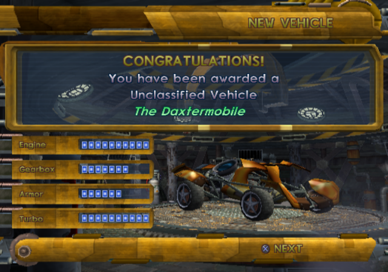
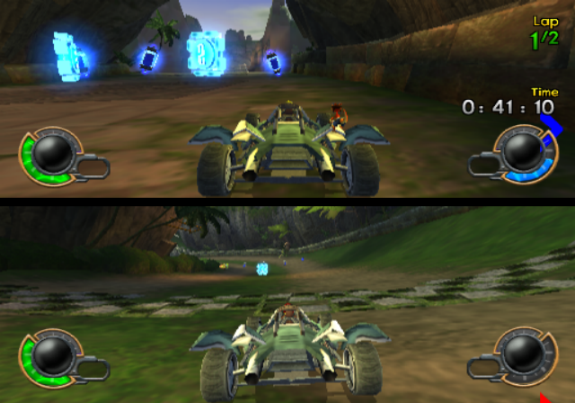
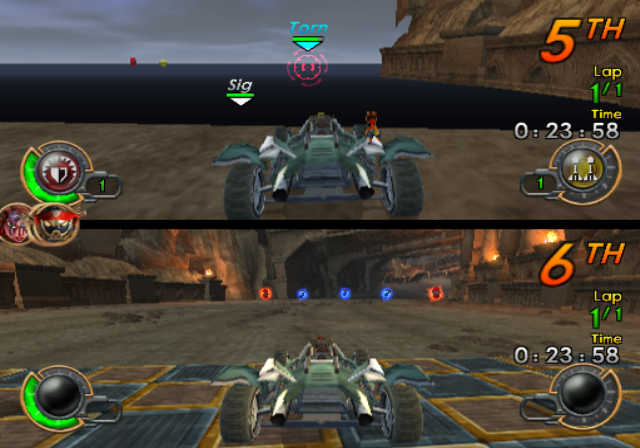
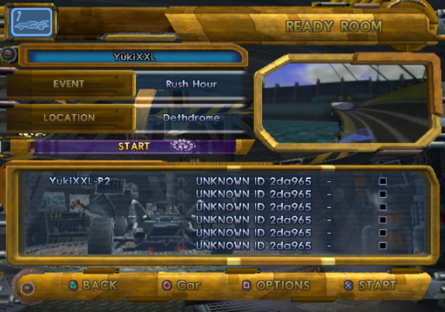

The codes are available in .pnach files for use with PCSX2 Emulator.
Cheat codes need to be renamed into (GAME_CRC).pnach. PCSX2 can read multiple .pnach files of the same CRC and with line added so you can have multiple .pnach's in the same game. To do it, simply add a line at the end (ex. CRC-something.pnach).
Guide for using PNACHIf you need the cheat codes in RAW format, simply do these steps:
1. Use "Find and Replace" to replace the lines "patch=1,EE," with "" (aka. NOTHING).
2. Repeat for the lines "//".
3. Replace the lines ",extended," with " " (aka. SPACEBAR).
If you want to convert the codes into format of your Cheat Device (Action Replay, Codebreaker, Gameshark, etc.), you will need the Omniconvert app.
If you wish to download the PNACH but it constantly opens as the text file, use the "Right Click > Save Link As ..." trick.
Modding tools that are used to make cheat codes or modding game files.
Usage will also be explained but it should be pretty simple. The actual instructions on how to use the programs can be found inside the files (manuals) or look online for tutorials.
If you wish to download the file but it constantly opens it as the text file, use the "Right Click > Save Link As ..." trick.
- Final Release (PAL-E) = DF659E77.pnach
- Final Release (NTSC-U) = 3091E6FB.pnach
- Final Release Greatest Hits (NTSC-U) = DBA28C59.pnach
- Individual Demo (NTSC-U) = C417D919.pnach
- Jak X n Ratchet Gladiator Demo (PAL) - 7557688D.pnach
Scan for secrets in the shop and unlock everything that can be unlocked. This includes PSP exclusives.
Enables all sub-options in game setup screen.
Bypasses the check that prevents from playing gamemodes like Freeze Rally in Split Screen. Otherwise, the error message appears: "This event can not be played in split screen".
Same thing as above but for LAN and Online.
Bypass for making Rush Hour work on LAN or Online for Split Screen.
Bypasses the check for Split Screen map types (so called "checkpoint names"). Otherwise, the error message appears: "This location can not be played in split screen".
It also loads the Single Player map types and those don't really work since the map stops loading at certain point.
Makes game think event is Circuit so it loads the SS map types (checkpoint names) for Circuit. However, if non-racing gamemode would be selected, it would crash the game upon loading. To avoid this, three more codes were made that enable/disable the code between racing and non-racing gamemodes.
Loads the Single Player map types instead of Split Screen map types. The map stops loading at certain point.
Due to Split Screen map types not being available for Tour races, the Single Player are used. The map stops loading at certain point.
A safer way to make Freeze Rally and Time Trial work in Split Screen.
Bypasses the DNAS.
This includes 3 codes: DNAS Bypass Enable Code, DNAS Bypass and DNAS Bypass alternate.
First: It checks if the event doesn't have maximum of 6 players.
Second: If it doesn't, it makes it have maximum of 5 CPUs and 6 Players.
This code was used for testing purposes.
Enables: Freeze Rally, Death Race, Rush Hour, for LAN and Online.
Enables Time Trial for LAN.
Enables Time Trial for more than one player. If trying to change a gamemode when lobby has been created, it changes to unknown gamemode which crashes the game.
Enables all events for LAN and Online. If trying to change a gamemode from Time Attack when lobby has been created, it changes to unknown gamemode which crashes the game.
Launches the game in Retail mode (final release like). Changes "demo" to "play".
Launches the game in Beta mode. This doesn't include offline mode so only Online mode is available.
Launches the game in Kiosk mode.
Premade files ( and updated ) with labels for use with PS2DIS.
Simply open the file inside PS2DIS and invoke analyzer or import it for the labels using "Import Labels from other file" option.
You can get the PS2DIS from HERE.